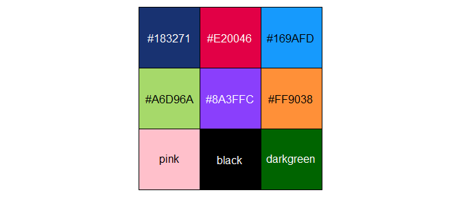

The purpose of rrplot is to provide auditors of the Norwegian Office of the Auditor General with the ability to quickly make beautiful graphs with ggplot2 that are in accordance with official requirements.
Installation
You can install the development version of rrplot from GitHub with:
# install.packages("devtools")
devtools::install_github("Riksrevisjonen/rrplot")Contents
The package contains custom wrappers for the following geom functions in ggplot2:
-
geom_bar()->geom_bar_RR() -
geom_point()->geom_point_RR() -
geom_jitter()->geom_jitter_RR() -
geom_density()->geom_density_RR() -
geom_line()->geom_line_RR()
Using the custom wrappers are optional, but recommended.
Example
This is a basic example which shows you how to create a bar chart:
library(ggplot2)
library(ggthemes)
library(rrplot)
mtcars |>
ggplot(aes(x = factor(cyl),
fill = factor(am))) +
theme_RR() +
geom_bar_RR() +
labs(title = "Number of Cars per Number of Cylinders",
x = "Number of Cylinders",
y = "Count") +
scale_fill_RR()
theme_RR() contains the custom theme and aesthetic adjustments, while geom_bar_RR() contains adjustments to the default settings in the bar plot geom. geom_bar_RR() accepts the same arguments as geom_bar().
Note that theme_RR() needs to be placed before geom_bar_RR() as a layer in the ggplot call.
Another example, with a scatter plot:
iris |>
ggplot(aes(x = Sepal.Length,
y = Sepal.Width,
color = Species)) +
theme_RR() +
geom_point_RR() +
labs(title = "Scatterplot of Sepal Dimensions",
x = "Sepal Length",
y = "Sepal Width") +
scale_color_RR()